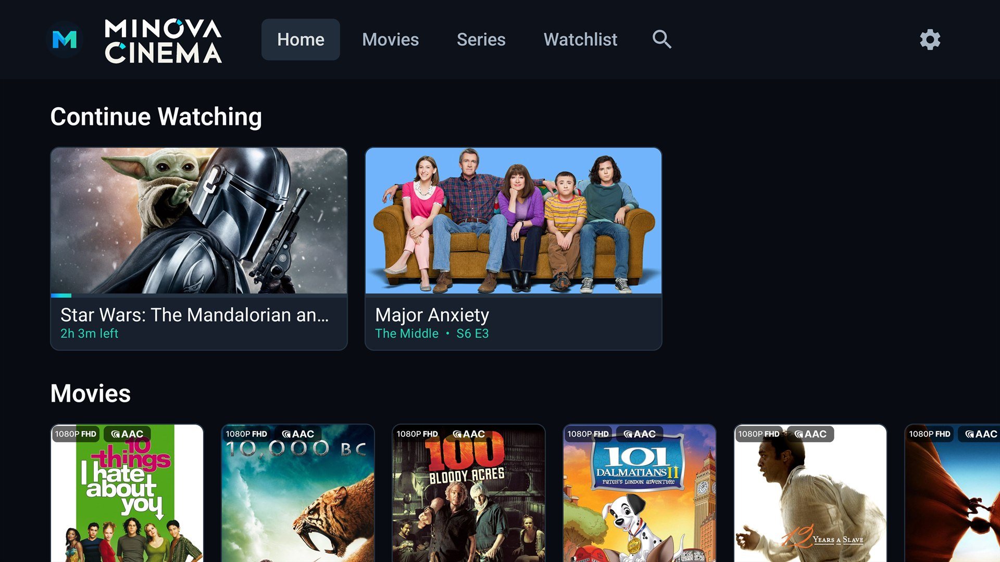
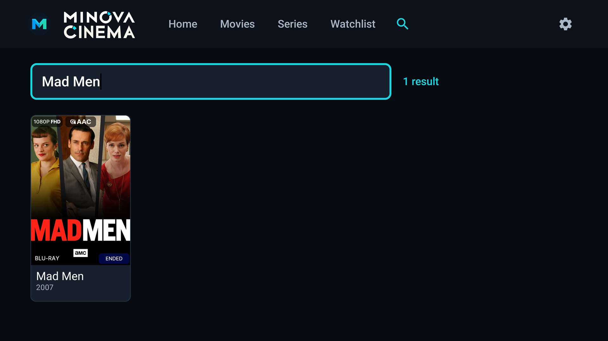
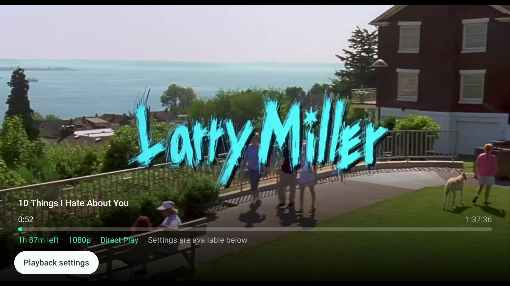
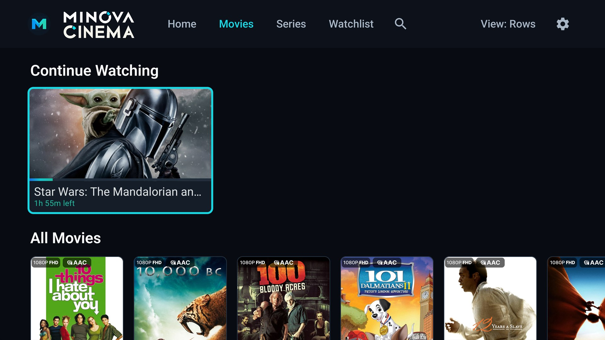
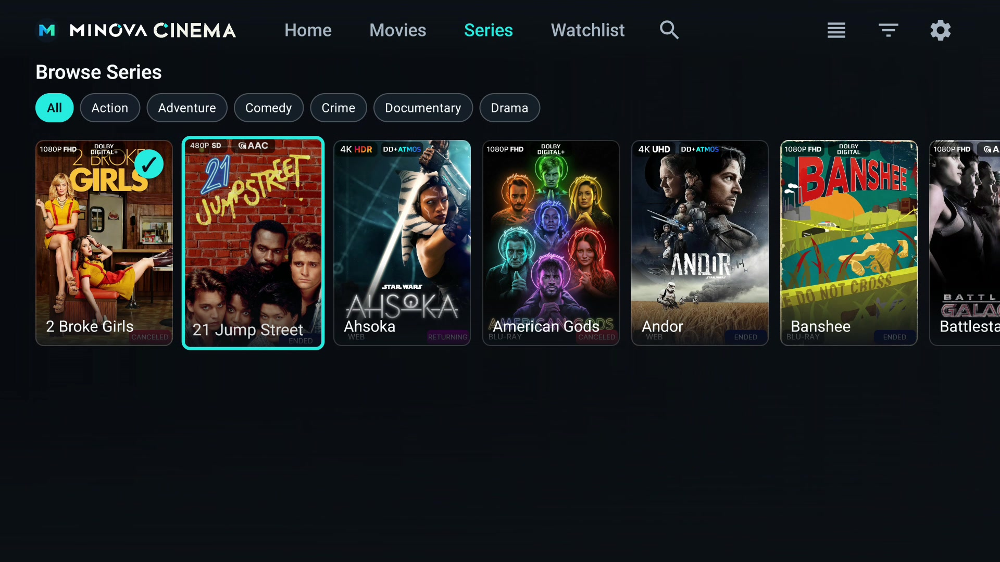

A / 01
Pick up where you stopped
Separate Continue Watching shelves, synced progress, Plex credit markers, and an optional ten-second autoplay countdown between episodes.
Android TV · Version 2.4.0
A quiet, cinematic home for the movies and shows already on your Plex server—built for the sofa, the remote, and the big screen.
Direct APK download · No Minova account · Connects directly to Plex

Minova Cinema turns Plex into a focused ten-foot interface. Every shelf, dialog, and playback control is designed around a D-pad—not a touchscreen pretending to be one.
Separate Continue Watching shelves, synced progress, Plex credit markers, and an optional ten-second autoplay countdown between episodes.

Find movies, series, seasons, and episodes across the libraries on your Plex server.
Move between editorial shelves and a complete grid. Filter by genre when you already know the mood.
Predictable focus, direct play and pause, clear watched states, and actions exactly where you expect them.
Cinema-grade controls
Minova Cinema asks Plex for the best stream your television can play, then keeps the important choices close without covering the picture.

Direct play when your TV, receiver, network, and source codec support it; Plex transcoding when they do not.
Uses Android TV and Media3 refresh-rate matching to present compatible content at its intended cadence.
Sends supported multichannel formats to a connected receiver, subject to the Android TV device audio path.
Switch audio language, subtitles, and quality from the on-screen playback settings panel.
Each library has its own Continue Watching shelf and complete collection. Movies and episodes never get mixed into one generic feed.


You enter your Plex server address and token on the TV. Minova Cinema connects to that server without a Minova account.
The interface is built around your media. It does not insert ads, recommendations from a storefront, or sponsored shelves.
The Android client and this website are published together on GitHub so the implementation can be reviewed.
Download the latest signed Android TV APK directly from Minova.
Download the latest APK ↓ without visiting the GitHub Releases page.
Transfer and sideload the APK, allowing installs from that source when Android prompts.
On first launch, enter your local Plex server address and Plex token. Your library will appear after validation.
No. It is an independent Android TV client that connects to a Plex Media Server. Plex is a trademark of Plex, Inc.
Direct play depends on the video, audio, and subtitle formats supported by your Android TV device and connected receiver. Plex can transcode incompatible sources when the server is able to do so.
Plex documents how to find an authentication token in its support guide. Treat the token like a password and do not share it publicly.
Yes. Use the Minova Cinema feedback form → to report a bug or request a feature, or open an issue on GitHub.
The lights are dimming